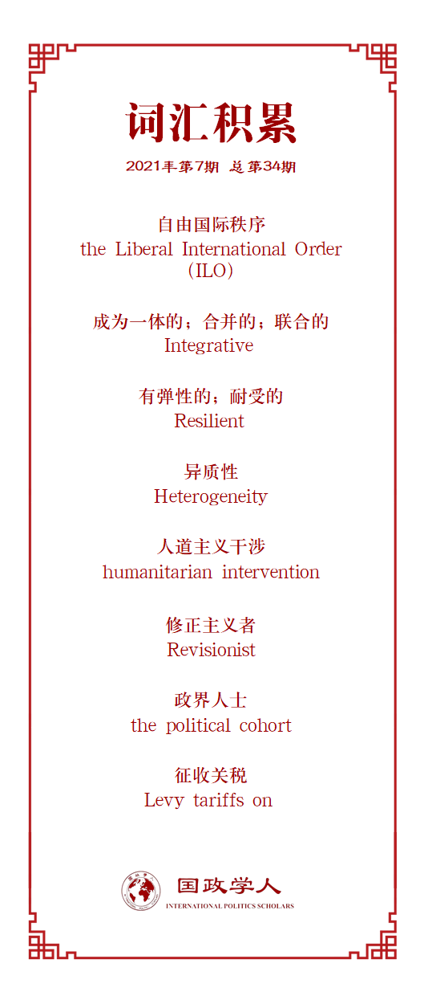

收录于合集

作品简介
【作者】 Jessica Chen Weiss，康奈尔大学政治科学与政府学副教授、华盛顿邮报猴笼博客（Monkey Cage）的政治学编辑，以及战略与国际研究中心的非常驻高级助理；Jeremy L. Wallace，康奈尔大学政治科学与政府学副教授。
【编译】 唐一鸣（国政学人编译员，北京大学国际关系学院研究生）
【校对】 朱家羲，石稚瑄
【审核】 朱文菡
【排版】 董诗
【美编 】游钜家
【来源】 Weiss, J., & Wallace, J. (2021). Domestic Politics, China’s Rise, and the Future of the Liberal International Order. International Organization , 75(2), 635-664. doi:10.1017/S002081832000048X
期刊简介
《国际组织》（ International Organization ），简称“IO”，是一份经过同行评议的季刊，涵盖国际事务的领域包括：外交政策、国际关系、国际与比较政治经济学、安全政策、环境争端与解决、欧洲一体化、联盟模式与战争、谈判与冲突解决、经济发展与调整、国际资本流动等。它成立于1947年，由剑桥大学出版社代表国际组织基金会出版，主编是乔治城大学的ErikVoeten。根据Journal Citation Reports显示，2019年其影响因子为5，在95种国际关系期刊中排名第2。
Jessica Chen Weiss
Jeremy L. Wallace
**国内政治、中国崛起与自由国际秩序的未来
**
Domestic Politics, China’s Rise, and the Future of the Liberal International Order
内容提要
在自由国际秩序的未来受到质疑的情况下，中国日益增长的影响力将如何重塑世界政治？本文指出，认为自由国际秩序(LIO)是一体的且富有弹性的观点过于乐观，其原因如下。首先，中国从当前国际体系获利的能力动摇了美国国内关于保留现有LIO的共识。其次，中国政府的执政特点与LIO的许多基本原则并不一致。那么，像中国这样的新兴国家选择如何与LIO内的关键机制和规范互动？作者提出了一个框架， 研究两个国内变量（中心性和异质性）对中国国际行动的影响，并以中国在气候变化、互联网治理等领域的行动加以阐释。 最后，作者考虑了随着中国影响力的增长，可能会出现哪些替代版本的国际秩序。
文章导读
01
引言
崛起的中国能否和平融入现有的国际机制和规范，这个问题并不新鲜。许多学者认为稳定或自由化的国际秩序将会持续存在。作者认为，将LIO视为一体的且富有弹性的观点过于乐观，原因有二。首先，中国从系统内部获利的能力动摇了美国国内关于保留现有LIO的共识。其次，鉴于中国具有截然不同的“社会目的”、身份和国家- 社会制度特征，其崛起将如何重塑 LIO，现有文献并未充分说明。包括美国在内的非自由国家和自由国家都选择性地加入国际机构并受其约束，以及美国和其他核心民主国家支持国际秩序中更加自由的成分意愿下降的变化，使得很难将中国对待国际秩序的方式概括为“修正主义”或“现状”。
中国执政党的主要特征包括国家优先于个人，依法治国，以及重新强调民族主义。这些特征与 LIO的许多基本原则并不一致，但可以与威斯特伐利亚原则和“嵌入”在国内控制系统中的市场共存。作者提出两个国内变量，即中心性与异质性，用以阐明中国在构成国际秩序的各种议题、规范和制度中的利益和行为的国内影响因素。
02
中国的崛起与自由国际秩序
对LIO的描述乐观地认为，中国等新兴大国可以和平融入该体系，而不会推翻它。一些学者认为，随着中国加入大量国际组织和多边协议，其行为也受到国际社会压力的影响，这有助于解释中国在没有明显物质利益的情况下的国际合作，中国在这些机构中的地位也限制和塑造了中国的选择。但这没有充分关注国内政治的作用，无论是在崛起国还是在具有全球优势力量的美国，国内政治的影响使学者对自由国际秩序的未来产生更为复杂的预期。
动摇的共识
对中国发展轨迹的日益担忧削弱了美国内部对继续“接触”中国的支持。一些人承认中国的日益一体化并没有带来更大的政治或经济自由化，特朗普政府将这种观点与对 LIO 的更广泛攻击联系起来，对曾经由美国主导的国际秩序发起正面攻击。国内联盟、身份和意识形态信仰对美国的选择至关重要。如果不参考美国国内政治，自由国际主义理论家很难解释为什么美国选择破坏保护其价值观和利益的最佳方式。
中国顽固的自由主义和与LIO的紧张关系
随着权力和影响力的增长，中国等新兴国家的国内政治将如何影响其寻求参与国际政治或重塑国际秩序。在基本层面上，中国很可能会效仿美国，在全球等级制度中优先考虑自己的国内利益和相对权力。然而，无可否认，中国在许多方面与美国不同。一方面，中国一直是尊重领土主权（威斯特伐利亚原则）、不干涉原则（联合国宪章）以及联合国安理会（UNSC）当前结构的坚定捍卫者。中国还帮助塑造并最终授权了“保护的责任”（R2P）。另一方面，当代中国政府的执政特点与LIO的特征不完全一致，LIO将民主、自由企业和个人政治自由视为基本原则，而中国的特点包括以下四个方面。首先，中国一直强调国家对私营企业的作用。其次，中国对民间组织、跨国非政府组织和活动家持保留态度。第三，中国明显偏向于“依法治国”而非“法治”。第四，中国在其治理中宣扬了一种更加民族主义的观点。
这些属性表明，中国的利益诉求与自由主义秩序的要求存在根本冲突。但后毛泽东时代的中国领导人并未寻求输出一种普遍的意识形态或政府形式。中国与经济自由主义之间存在更大的紧张关系。经济自由主义的前提是不受约束的国内市场、国家之间的自由贸易以及对国际资本和外国投资的较少限制。但是，中国更愿意接受一种重新“嵌入”的自由主义形式，国家在其中有自由裁量权来缓冲自由贸易的影响。另外，对于自由制度主义，即有原则的多边主义治理，中国的参与情况不一。中国积极参与一些国际组织以促进其利益，同时拒绝加入一些国际机构（如国际法庭）。中国倾向于双边谈判而不是多边主义的行动规律表明，尽管中国可能成为现有机构中越来越雄心勃勃的利益相关者，但其重大的新国际倡议，如“一带一路”倡议，不太可能采取限制主权自由裁量权的多边协议的形式。
03
国内政治与国际秩序：
中心性与异质性
像中国这样的国家如何选择其参与国际秩序的形式和程度？中国希望从构成国际体系的一系列结构、规范和期望中得到什么？本文认为国家偏好——国家在国际体系中寻求的结果——主要由国内政治决定。
中国政治受到国内和国际环境的影响。国际环境可以激发国内改革并促进规范的传播，可以创造机会影响国内利益观念，但也可能产生国内反弹。但归根结底，国内结构和国家- 社会关系决定了人们如何看待和采用国际想法和实践。本文认为，两个特征——中心性和异质性——塑造了国家在特定国际问题领域的国内政治。
中心性
中心性描述了政府如何密切关注影响其生存前景的问题。领导层的主要关注点之一是预测、先发制人或回应看似微不足道的问题与政权支持的核心支柱之间的联系，其面临的一个主要挑战是管理涉及多种政权支持来源的问题。政府更有可能将资源和注意力投入到国内更重视的国际问题上。一个国际问题在国内的中心性越大，政府就越有可能采取有利于其国内利益的单边政策来支持这些支柱。此外，当所要求的变革威胁到这些支柱时，国际压力更有可能适得其反。国际问题在国内的重要性越大，政府就越难在国际上做出让步。
反之亦然，由于双层博弈的存在，某一问题的国内中心地位会影响政府在国际层面的谈判地位。在核心问题上，一个更愿意在违反现有规范和制度的情况下“单独行动”的政府更有可能在这个问题上要求国际改革或建立自己志同道合的国家联盟来推进其在一系列替代机构中的观点。
在中国共产党执政的前二十五年，坚持毛泽东对共产主义和民族主义的解释是其政权的核心支柱。随着毛逝世和改革开放，中国政府将其合法性与民族主义、经济增长和公共安全紧密联系。
民族主义 。自新中国成立以来，政府确保国家国防和领土完整的能力对于证明其统治的正当性至关重要
经济增长 。政府利用经济增长和积极的经济统计数据来证明其在后毛时代的统治能力和正当性。
公共安全 。政府保护公民免受疾病、灾难、犯罪和恐怖主义侵害的能力也是其统治的核心支柱。
在联合国，大多数问题与这些核心支柱无关。本文预计，中国政府将投资并严格坚持与政权支持的核心支柱更密切相关的主权方面的内容，并且更有可能在其他方面表现出灵活性并减少投入。对台湾的主权要求是中国民族主义的核心，中国一向主张台湾是其不可分割的一部分。作者认为，鉴于该问题在国内的中心地位，中国政府付出巨大努力，将台湾排除在国际体系之外。中国反对台湾正式参与国际组织，对其对外活动采取一定措施，并试图限制美台关系的性质。互联网治理也直接影响中国政府的生存前景，中国领导人公开指出网络安全和网络主权在保护国家免受内外威胁和维持稳定经济中的作用。由于其在国内的中心地位，中国已决心将“尊重网络主权”纳入互联网治理的国际讨论中。在主权的次要方面，例如人道主义干预和维持和平问题，中国政府更愿意妥协。
存在触及政权支持核心支柱的国际问题并不一定意味着政府无法做出让步，尤其是当其作为国家在另一个核心问题上的利益的国际协议的一部分。中国在碳排放问题中不断变化的立场是涉及两个核心支柱——经济增长和公共卫生——的一个典型例子。最初，政府认为国际上限制碳排放的努力对国内经济增长构成威胁。虽然严重的空气污染威胁着公众健康，但中国政府早先对国内关于这一问题的讨论持消极态度。随着国内环境问题的严重，民众不满情绪上升，作为公共卫生危机的空气污染问题在国内的中心地位上升促使中国政府转变方向，先后在双边和多边国际气候合作中取得重大进展。根据本文框架，中国的国际气候领导力与其说是原则性立场的结果，不如说是国内要求在经济增长和公共卫生之间转变的副产品。
异质性
异质性描述了针对特定国际问题的政府政策的国内分歧和争论程度。因如何实现其国际利益而产生的国内不同利益相关者及分歧在大众和精英层面都可能出现。异质性可以表现在社会舆论，政策精英和专家的公开和私下讨论，以及国有/私营企业、地方政府和中央部委的表态和行动中。
在中国内部，中央和地方领导层面临不同的激励因素，掌握不同程度的信息，使得委托代理问题普遍存在。此外，国家领导人主要负责制定总体方向，集中的国内利益则可以主导政策的设计和实施阶段。例如，当代领导人标志性的“一带一路”倡议提供了一个包罗万象但含糊不清的口号，这使国内利益集团很容易以国家政策为掩护，追求自己的议程。
国内利益的异质性在国际问题领域差异很大。国内异质性低的问题意味着对政府在国际层面上应该做什么的争论相对较少。低异质性还体现在一小部分参与者可在没有反对的情况下支配或控制政策进程。反之，这些集中利益的偏好可以直接塑造政府的国际立场。国内偏好和动员利益的异质性越高，政府政策以牺牲其他人为代价使某些人受益的可能性就越大，这也会影响政府对国际承诺的执行力。
异质性的不同程度会带来不同的国内风险和回报。低异质性问题使政府难以在面对外国压力时表现出灵活性，因为这可能会引发更广泛的国内反弹以及其他精英的不满。但在低异质性问题上的国际成功也可以为政府提供更大的国内支持，因为群众和精英团结一致。相比之下，以国内重大分歧为特征的问题具有挑战性，当一个问题具有高度异质性时，其下行风险通常较低，因为国内分歧降低了对政府统治的联合挑战的可能性。但高度异质性问题的上行回报也较低，因为政府必须付出高昂代价或进行有针对性的压制。
中国在一些国际议题上的特点是国内异质性低。收复台湾是中国民众和精英的统一目标，参与联合国维和行动和中国公民在海外的安全是国内争议较少的问题。在这些问题上，中国政府制定的政策没有太多群众或精英的异议。
在许多其他国际问题中，中国政府面临着巨大的国内分歧。例如，受益于稳定贬值的人民币（RMB）的出口导向型行业反对人民币升值，认为这会导致数百万中国工人失业，从而破坏社会稳定。在网络主权方面，使用开放和未经过滤的互联网的呼声上涨意味着中国政府需要努力管控其境内的网络活动。国内高度异质性也是中国参与应对气候变化的国际行动的一个特点，污染行业和受益于这些收入的地方政府对其政策十分不满，这些分歧给中国履行国际环境承诺带来了困难。但与此同时，中国可再生能源产业的利益以更积极的方式塑造了其应对气候变化的努力。中国对可再生能源的投资有助于其企业在不断增长的行业中确立领先地位，这些政策也产生了积极的外部效应，有助于全球应对气候变化的努力。正如这些例子所示，异质性与国际合作或对抗没有直接的关系。相反，它有助于解释政府在国际谈判中提出的国内限制和激励措施的性质。更大的异质性可能会产生更艰难和更持久的国际谈判，并增加实施失败的可能性。
04
中心性和异质性：可塑性和移动性
如表1所示，中心性和异质性并非一一对应。一些高度核心的问题也具有高度异质性，例如网络主权和气候变化问题。一些高度核心的问题具有相对较低的异质性，例如台湾问题。一些问题具有中心性低、异质性低的特点，例如大多数摆在联合国面前的问题和中国参与国际维和的问题。最后，一些低中心问题的特点是高度异质性，例如阻止大规模杀伤性武器 (WMD) 和相关导弹技术扩散的不扩散协议。然而，表1也显示出这些问题的可塑性和移动性，因为国内行为者试图操纵给定问题的明显中心性和异质性。例如，次国家行为者可能将其需求与一个核心支柱联系起来，以维护自身利益。在争取政府关注的竞争中，扩大其利益中心地位的地方行动者比那些利益处于边缘的行动者更有可能取得成功。此外，政府也可能会尝试提高某一国际问题的中心地位，以减少国内的异议并在国际谈判中表现出决心。例如当中美对抗被描述为与美国的地缘政治斗争时，与提及贸易战的经济成本时相比，中国调查受访者更支持政府应对贸易战的举措。
05
结论
LIO能否经受住中国日益增长的影响力和重塑全球治理的愿望的挑战？中国的国内“社会目的”并不要求其对现有国际秩序进行全面破坏，它更倾向于强调威斯特伐利亚主权和不干涉准则的传统。为理解中国对待国际秩序的方式的不同，本文提出了一个以国内政治为基础的框架，认为国内的中心性和异质性塑造了中国在国际秩序领域处理各种问题的方法。一个国际问题越接近该政权统治的一个或多个核心支柱，该政权就越会在该问题上进行国际投资并抵制国际压力。国内利益在国际问题上的异质性越大，该政权就越会面临来自不同地方参与者的相互竞争的要求。突出国内政治的作用对于理解一个强国为何选择投资某一国际议题以及何时可能选择放弃或逃避先前的承诺至关重要。本文的研究表明，中国的国际领导地位更有可能是中国政府自身利益的副产品，而不是其提供公共产品的原则性努力。承认国内驱动因素的首要地位也表明国际压力并不一定会导致中国更向LIO靠近或者加强自愿承诺。
国际秩序的未来不仅取决于中国，还取决于美国和其他主要成员的国内政治转变。转向更加民族主义的政策的并非只有中国，包括美国在内的许多国家都与中国一样，对自由秩序中一些更具挑战性的元素（例如国际刑事法院和国际法院）持矛盾态度。来自新兴国家的压力，以及来自主要民主国家内部的民粹主义挑战，可能会结合在一起，产生一个更简约的自由国际秩序版本。一个较少干预国内事务但仍然开放且基于规则的国际秩序符合中国政府的期望，中国日益增长的影响力很可能会导致体系外的冲突，而不是当前体系内部规则的竞争。
译者评述
在美欧学术界，“自由国际秩序”、“美国的自由秩序”、“世界秩序”等概念指的是同一个事物，即美国主导的、西方民主国家组成的国际秩序，且由于该秩序在战后世界秩序中占主导地位，西方学者也将“自由世界秩序”视为战后或当代世界秩序。但实际上，“世界秩序”是指战后反法西斯国家联合建立的、以联合国为中心的、逐渐发展到世界所有地区和国家的全球性秩序。[1]若将自由国际秩序等同于现存国际秩序，实际上就是在美欧语境下叙事，忽视了其他国家和地区的诉求。自由国际秩序嵌于世界秩序之中，是其重要组成部分。从这个角度来看，很多西方学者将中国视为对现有国际秩序的挑战者和对抗者的观点有失偏颇。本文作者与大多数学者不同，并未简单将中国视为对ILO的“修正主义者”，而是考虑到包括美国在内的主要核心民主国家对ILO中部分组成要素的不满，并且认为这是受到各国国内政治的影响。具体来说，作者认为国内的中心性和异质性塑造了中国在国际秩序领域处理各种问题的方法。中国领导人将中国在国际秩序中的国家身份定位为世界大国、新兴市场国家及世界上最大的发展中国家，这由中国国内社会自我认定与国际社会认同双重构建而成。[2]国家身份、国家整体利益诉求使中国趋于正向认同国际秩序，并试图改革其中不合理不公正的成分，从这一点来说，美国也是如此。在基于三个维度（安全、政治和经济规范）的国际秩序中，中国都是其参与者、维护者甚至是保护者，但这并不意味着中国的外交路径是一成不变的，虽然中国国内对中国参与国际事务的关注度上升，但由于国内对不同国际问题的共识程度不同，中国在不同领域的国际行动必然会呈现不同的立场与进度。
参考文献
[1]周桂银.美国自由国际秩序之辨识——理论、实践与前景[J].美国问题研究，2020(02):39-71
+204-206.
[2]张少冬.论习近平对中国在国际秩序中国家身份的三重定位[J/OL].思想政治教育研究:1-6[2021-06-27].http://kns.cnki.net/kcms/detail/23.1076.G4.20210318.1557.002.html.
词汇整理

文章观点不代表本平台观点，本平台评译分享的文章均出于专业学习之用, 不以任何盈利为目的，内容主要呈现对原文的介绍，原文内容请通过各高校购买的数据库自行下载。
好好学习，天天“在看”
国政学人
支持学术公益与知识传播
微信扫一扫赞赏作者 __赞赏
已喜欢，对作者说句悄悄话
取消 __
发送给作者
发送
最多40字，当前共字
上一页 1/3 下一页
长按二维码向我转账
支持学术公益与知识传播
受苹果公司新规定影响，微信 iOS 版的赞赏功能被关闭，可通过二维码转账支持公众号。